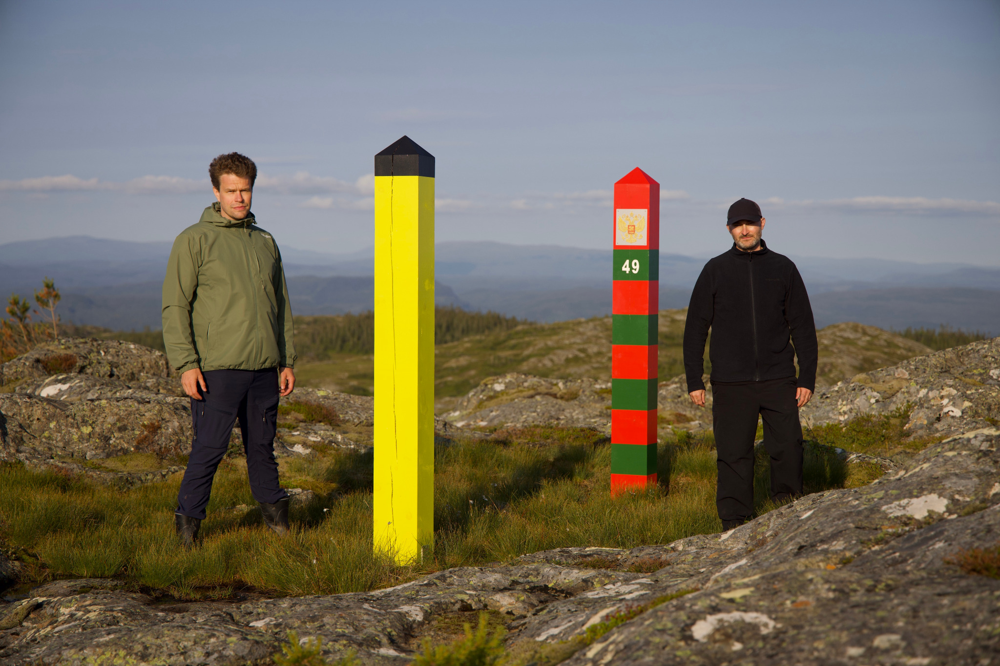

ABOUT THE FILM
At the Norwegian–Russian border near Kirkenes, strict regulations determine how the landscape and its border markers can be approached and filmed. To obtain viewpoints prohibited at the actual border, Tobias Liljedahl and Anton Benois constructed replica border poles and a false border zone elsewhere in Norway.
As the film cuts between the real and reconstructed landscapes, their distinction becomes increasingly unstable. The border posts become protagonists; a drone circles them as camera, surveillance device and territorial provocation; and OLAV, a synthetic Norwegian voice, recites their technical specifications (download here).
Reindeer move through the borderland without recognising its divisions. The replica markers possess none of the originals’ legal authority, yet on camera they become difficult to distinguish. Ingenmannsland asks where a border’s authority resides—in the physical object, the territory surrounding it, or the system that gives it meaning.

ABOUT THE DIRECTORS
Tobias Liljedahl
Tobias Liljedahl (b. 1988, Gothenburg) is a visual artist based in Trondheim. His practice centres on essay films that make broader social and political systems tangible through specific places and personal observations. His moving-image works often develop into installations incorporating sculpture and photography. Recent projects include Cruise (2025) and ISO 668 (2024). He studied at Trondheim Academy of Fine Art, NTNU.
Anton Benois
Anton Benois (b. 1979, Soviet Union) is a visual artist based in Oslo, working with film, installation, sculpture, performance and publications. His work often begins with found or reconstructed images and objects, using staging, repetition and humour to examine how they acquire cultural and institutional authority. His artist book Lost in Space, featuring an authentic archive of Soviet space-dog photographs, was released by Multipress in 2026. He holds an MFA from Trondheim Academy of Fine Art, NTNU.